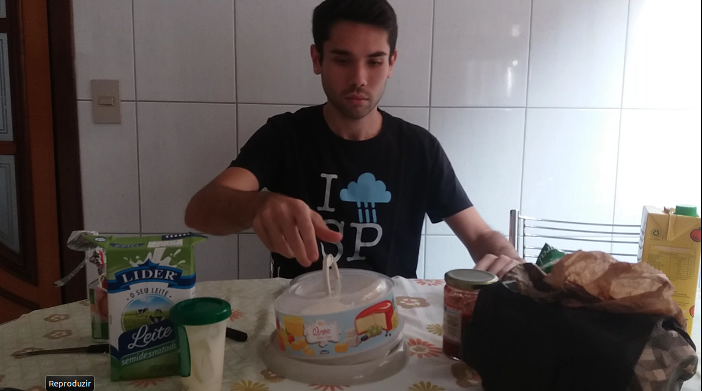
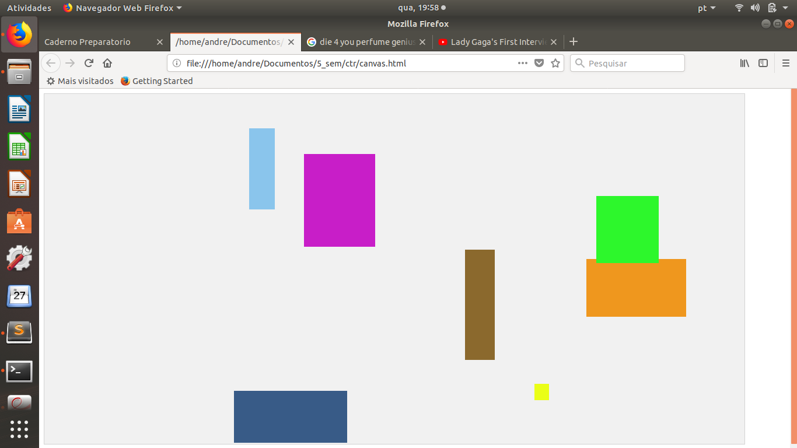

CTR0665 - Estética e Teoria do Audiovisual I | por André Luiz Akabane Solak
Exercício 1
Desafio de singularização
Como filmar algo absolutamente “ordinário”, cotidiano, como se fosse a primeira vez? Como “desfamiliarizar” (= “estranhar”) algo
que nos é familiar? Como criar uma “percepção particular”, uma “visão” de algo banal? Elaborar um vídeo curto (cerca de 1 a 3 minutos).
Meu objetivo é singularizar, obscurecer, desfamiliarizar algo que sob minha percepção já se tornou banal e sem "essência", algo que eu
assimilo de maneira automática, sem observação. Quero transformar percepção mecânica em
visão "estranha".
O objetivo da arte é dar sensação do objeto como visão e não como reconhecimento; o procedimento da arte é o procedimento
da singularização dos objetos e o procedimento que consiste em obscurecer a forma, aumentar a dificuldade e a duração da percepção
Um autor que se utilizava constantemente de tal procedimento era L. Tolstoi. Seu processo de singularização consiste no fato de que
ele não chama o objeto por seu nome, mas o descreve como se o visse pela primeira vez e trata cada incidente como se acontecesse
pela primeira vez". Por exemplo, em Kholstomer, a narração é conduzida por um cavalo e os objetos são singularizados
pela percepção emprestada ao animal, e não pela nossa.
Até hoje, nós violentamos a câmera forçando-a a copiar o trabalho do corpo humano. Doravante, a câmera estará liberta
e nós faremos funcionar na direção oposta, o mais possível distante da cópia.
Eu posso forçar o espectador a ver esse ou aquele fenômeno visual do modo como me é mais vantajoso mostrá-lo.
O meu caminho leva à criação de uma percepção nova do mundo. Eis porque decifro de modo diverso um mundo que vos
é desconhecido
o cine-olho constesta a representação visual do mundo dada pelo olho humano e que propõe seu próprio "eu vejo" e
o kinok-montador organiza os minutos da estrutura da vida, vista pela primeira vez desse modo.
Como eu posso ter uma visão diferente sobre o objeto e ainda transpô-la para a camêra?
Olhando de perto, o capô congelado de um carro parece a Terra, vista do espaço.
Este cemitério de Tóquio, visto de cima, parece uma cidade.
Uma lagosta no balde que parece um monstro gigante em cima de um planeta prateado.
Esta pedra com musgo que parece uma ilha vista de cima.
O interior de um violão que mais parece um apartamento supermoderno.
IDEIA
Eu quero trabalhar com a percepção. As imagens acima, por exemplo, atingiram um efeito de desfamiliarização através
da brincadeira com a proporção dos objetos e a maneira - ângulo, posição da camêra - como eles foram capturados. Eu poderia gerar uma singularização trocando o ponto de vista: ao invés de eu ver um objeto sob o meu olhar,
eu ver o mundo sob o olhar do objeto, isto é, ser o objeto.
Minha ideia é "trocar de lugar" com o lixo. Por quê? Ultimamente eu me sinto como um rs. Seria interessante e engraçado brincar com essa ambiguidade: estou singularizando
a mim mesmo ou o lixo? Além disso, como todo o público que assistir ao vídeo também estará se colocando no lugar do objeto e seu conteúdo,
não seria absurdo dizer que também é uma crítica sobre a maneira que o ser humano, em geral, vêm se comportando frente a algumas situações.
EXECUÇÃO
Alguns testes de vídeo:
Este foi um teste gravado com a câmera frontal do celular. A luminosidade curiosa que surge ao fechar a tampa
deve-se a luz que é emitida da própria tela do dispositivo.
Já este foi gravado com a câmera traseira do celular. Agora tudo fica escuro quando a tampa se fecha.
A ideia original era esta mesmo e acho que combina mais com a sensação que deve ser sentida ao assistir o vídeo.
Aqui mais um teste. Agora com o meu reflexo aparecendo na tampa; eu acabei aparecendo por acidente e, na
verdade, gostei pois contribui bastante com a proposta do vídeo.
Áudios gravados:
Áudio do jornal. Pretendo cortar para pegar as notícias mais absurdas e ultrajantes.
Sons de cozinha. Eu imaginei uma lata de lixo de cozinha e queria usar esses sons para tentar inserir um contexto narrativo no vídeo:
alguém está na cozinha preparando ou fazendo algo enquanto escuta as notícias do jornal.
Mais sons.
FEEDBACK
Comentários:
Acho que eles gostaram. Não sei. Eu até que gostei do resultado;
Acho que eles ficaram meio preocupados quando eu disse que estava me sentindo um lixo rs;
Comentaram algo sobre a edição do aúdio que eu achei bem interessante: ele estava em primeiro plano, como se estivesse
saindo de dentro da lata de lixo. Eu não havia pensado nessa questão, mas aparentemente algumas pessoas inferiram um significado desse aspecto técnico;
Eu fui o primeiro a apresentar depois de serem exibidos os melhores vídeos do ano anterior. Depois que o meu foi passado eu pensei "Meu Deus, que lixo."
E, logo em seguida, "ah mas se bem que é isso mesmo né? Um lixo kkkk. It is what it is". Agora eu estou achando meu trabalho bem genial, na verdade.
Exercício 2
Desafio de espacialização
Criar uma cena curta (máx. 3 min) na qual seja ativado o extra-campo da imagem.
Para isso, vale considerar tanto os tipos de espaço cinematográfico propostos por Eric Rohmer, quanto aqueles propostos
por Noel Burch. O importante é que algo aconteça dentro do campo visual dialogando ou estimulando de alguma forma o que
está fora de quadro/campo.
O espaço cinematográfico pode ser definido e dividido sob concepções diferentes. Segundo Éric Rohmer, o espaço é
organizado por meio de três campos: o pictórico, o arquitetural e o fílmico. Já para Noel Burch, o cinema é composto por dois
espaços: o que está compreendido dentro do campo visual do espectador, i.e. o que ele vê pela tela; e o que está fora do
campo visual, que por sua vez engloba 6 segmentos. Estes são delimitados pelas 4 bordas do quadro, o que está por trás da
câmera e o que está atrás do cenário.
IDEIA
Quero usar este recurso de espaço fora do campo visual para causar algum pequeno impacto ou um plot twist
no final de uma cena. Minha ideia é gravar uma pessoa dormindo ao som de bombas e barulhos de guerra para dar a entender
que é algum tipo de sonho. No final, no entanto, revela-se que eram sons acontecendo em lugares reais. Seria interessante
levar o espectador a refletir que, enquanto ele usufrui uma condição de segurança e conforto, retratada pela imagem da cama, há outras pessoas
vivendo em cenários terrivelmente precários e que precisam de ajuda - o "pesadelo" da pessoa dormindo.
Minha inspiração veio das atuais notícias divulgadas sobre o guerra na Síria e tenho em mente usar tal contexto, em especial, o recente caso de ataque com mísseis dos EUA, França
e Inglaterra em resposta ao uso de armas químicas sob a ordem de Bashar al-Assad.
"Roteirinho":
Mostro uma pessoa dormindo e uma indicação do horário;
Gradualmente surgem os sons de bomba e guerra. Continuo focando na pessoa dormindo, ela pode se mexer
um pouco e demonstrar certo desconforto durante o sono;
Corto para quando a pessoa já estiver acordada e tomando um café da manhã. Ela liga a televisão;
Enquanto a pessoa toma seu café sem realmente prestar atenção na TV, escutamos o som em off (aqui há outra utilização do campo extra-visual) vindo do aparelho e podemos perceber
que é um noticiário relatando o ataque da noite anterior. Em dado momento, é dito o horário da investida sob o horário de Brasília, que eu espero que o público
note que é o mesmo do início do vídeo;
Fim.
EXECUÇÃO
Alguns testes de vídeo:
Primeira cena: enquadramento do personagem (meu irmão) dormindo. O extra campo é ativado com os sons de guerra e caos que estão acontecendo
em outro local do planeta. O horário será colocado na edição.
Segunda cena: café da manhã no dia seguinte. O personagem liga a TV e, segundos depois, acompanhamos o noticiário com
o som em off-screen.

Terceira cena: enquanto o personagem toma seu café da manhã, escutamos a jornalista noticiando o ataque de mísseis à Síria.
Áudios:
Para criar a atmosfera de "pesadelo" e, tendo em mente o tema da guerra, escutei a trilha sonora do filme
Dunkirk. Encontrei esta faixa que é perfeita para a primeira cena, há inclusive um "tic-tac" que lembra o som de um
relógio, o que ficaria com a indicação do horário.
Sons de guerra e caos. O primerio é um áudio real gravado após um ataque na Síria.
Áudio do jornal já editado.
Sons de ambiente.
FEEDBACK
Comentários:
Acho que eles não gostaram. Eu também não gostei muito. Não sei se a proposta do exercício foi cumprida do modo esperado. Segundo o professor e a sala,
meu extra campo acionado não foi exatamente o do quadro, mas sim uma espécie de espaço "cósmico";
Fizeram um comentário super pertinente sobre a primeira cena: tecnicamente, o extra campo do quadro seria o quarto do personagem,
mas, na verdade, o espaço acionado foi em outro lugar do planeta;
Eu mostrei para uma amiga que não é da ECA e ela mencionou uma cena em Sniper Americano que se constrói com uma
proposta parecida. Eu não assisti ao filme mas, segundo sua descrição, há um personagem que está vendo televisão cujo conteúdo
não é mostrado ao público, escuta-se apenas barulhos de guerra. No entanto, conforme a câmera vai virando e exibindo a tela da TV,
revela-se que ela está desligada e que os sons são da própria cabeça do personagem. Nesse sentido, acho que um certo tipo de extra campo
visual, de fato, foi utilizado;
A proposta do exercício foi mais notada na cena da cozinha, com o som da TV em off-screen.
Exercício 3
Plasticidade
A partir das inquietações apresentadas por Hans Richter em seu texto “The Film as an Original Art Form” (in: SITNEY, P. Adams (ed.). Film Culture Reader. Nova York: Cooper Square Press, 2000, p. 15-20),
criar um vídeo de no máximo 3 min. no qual seja explorada a plasticidade da imagem (e do som), sem recorrer a uma estrutura narrativa, pois a ênfase deve ser dada a uma relação mais sensorial com as imagens e sons. Podem ser usadas palavras, diálogos, música, found footage, imagens figurativas etc., desde que nenhum desses elementos configure o ato de "contar uma história".
O texto em questão propõe uma discussão acerca do cinema e sua função como ferramenta artística, indagando em que
medida a câmera é usada para reproduzir ou produzir. No sentido de reprodução, o filme é predominantemente usado para registrar grandes conquistas
criativas, mas usualmente de peças, atuações, romances, natureza, etc., preterindo a criação de sensações originalmente fílmicas.
IDEIA
Socorro. Estou sem ideias, o semestre está acabando acabando com a minha verve.
Eu gostei bastante das animações experimentais que vimos em aula. Acho que traduz bastante o cinema como forma de produção,
uma vez que baseiam-se essencialmente no movimento de formas e geram sensações peculiares. Juntando tais fatores com o desafio
da plasticidade da imagem, seria interessante elaborar algo com bastantes cores, movimento e, se possível, texturas. É também uma
boa oportunidade para usar recursos computacionais.
EXECUÇÃO
Pesquisei bibliotecas disponíveis para algumas linguagens de programação, mas todas são muito complexas para tentar
produzir algo em cima da hora. Vou optar pelos recursos de HTML mesmo e construir uma página de web.
Construção:
Depois de muito trabalho consegui construir alguns retângulos. Acho que consigo animá-los e instanciar minhas variáveis
de maneira aleatória. Se der certo eu poderia cobrir a tela inteira com retângulos coloridos se movendo.

Consegui definir tudo aleatoriamente e animar as formas! Uhul! Também fiz com que, a partir de um determinado número
de iterações, os retângulos se tornassem pretos, assim, no final, acabamos com uma tela preta preenchida por todos os retângulos.
Acho que eles gostaram! Eu também gostei, ainda mais que não havia sido iluminado com muitas ideias;
Perguntaram bastante sobre o código e parace que gostaram do fato de ele ser aleatório, gerando uma
confguração diferente toda vez que ele é executado.